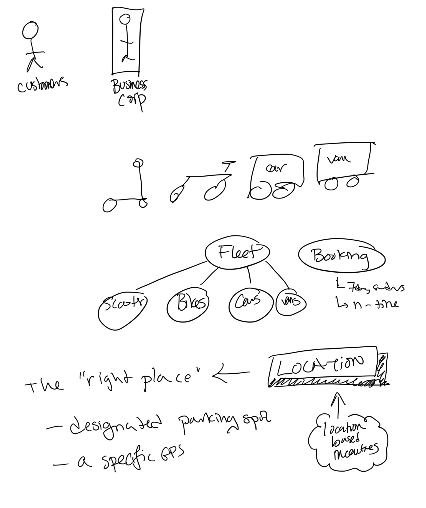
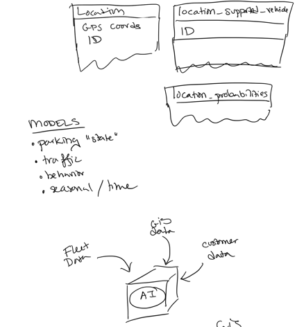
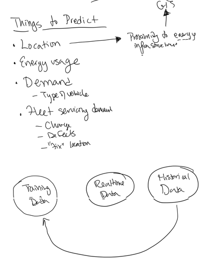
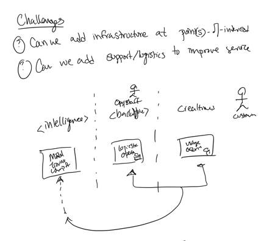
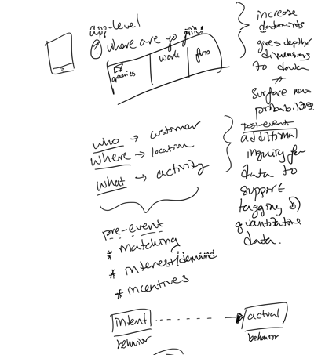
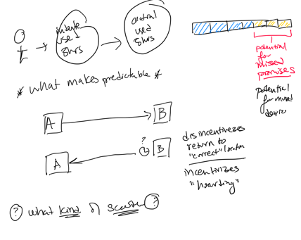
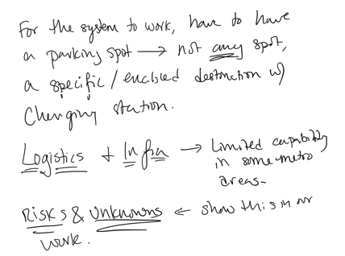
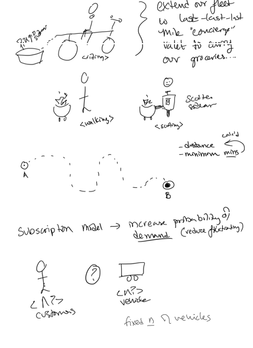

graph TD FD[Fleet Data] --> AI(AI) GD[GIS Data] --> AI CD[Customer Data] --> AI
Brainstorm 2
Raw Notes + AI Summarization
Board + Sketches








AI Summmary
Notes transcribed using WPP Open, Gemini 2.5 Flash
Users & Vehicles
- Customers
- Business Corp
- Vehicle Types: Scooter, Bike, Car, Van
Fleet & Booking
- Fleet:
- Scooters
- Bikes
- Cars
- Vans
- Booking:
- 7-day radius
- On-time
Location & Incentives
- The “right place” -> LOCATION
- Designated parking spot
- A specific GPS
- Location-based incentives
Data Models
Locationtable:- GPS coords
- ID
location_supported_vehicletable:- ID
location_probabilitiestable
Models & AI Inputs
- MODELS:
- Parking “state”
- Traffic
- Behavior
- Seasonal / Time
Things to Predict
- Location
- Proximity to energy infrastructure
- Energy usage
- Demand
- Type of vehicle
- Fleet servicing demand:
- Charge
- Defects
- “Fix” location
Data Flow for Prediction
- Historical Data –> Training Data
- Training Data –> Realtime Data
- Realtime Data –> Historical Data
Challenges
- Can we add infrastructure at points-of-interest?
- Can we add support/logistics to improve service?
System Intelligence & Operations
- Intelligence: Mind, Training, Compute
- Operations: Logistics Operations
- Customer: Usage, Customer
- Flow: Intelligence -> Operations -> Customer -> Intelligence
App-Level Data & Behavior
- App-level: “Where are you going?” (e.g., Work, Fun, Groceries)
- Increase data points
- Gives depth/dimensions to data
- Surface new probabilities
- Data Categorization:
- Who -> Customer
- Where -> Location
- What -> Activity
- Pre-event:
- Matching
- Interest/demand
- Incentives
- Post-event:
- Additional inquiry for data to support tagging & quantitative data.
- Intent —-> Actual behavior
Predictability & Incentives
- User -> Intended User Behavior -> Actual User Behavior
- Diagram (Potential for Missed Promises / Moral Hazard):
- Timeline with a section marked “Potential for missed promises” and “Potential for moral hazard”.
- What makes predictable?
- Trip Scenarios:
- A –> B (Standard trip)
- A <– ? B (Disincentivizes return to “correct” location, incentivizes “hoarding”)
- What kind of scooter?
System Requirements & Risks
- For the system to work, have to have a parking spot -> NOT any spot, a specific/enabled destination with charging station.
- Logistics + Infrastructure -> Limited capability in some metro areas.
- Risks & Unknowns <- show this in our work.
Fleet Extension & Business Models
- Extend our fleet to last-last-last mile “concierge” valet to carry our groceries…
- User Scenarios:
- Person with basket on bike (riding)
- Person walking
- Person with scooter and box (scooting)
- Calculations:
- Distance
- Minimum minutes
- Path A to B:
- A – dotted line –> B
- Subscription model -> increase probability of demand (reduce fluctuating)
- Customer (n?) <-> Vehicle (n?) -> fixed n of vehicles
AI Summary - Generated Diagrams
Data for AI
Note: This diagram is fine. Reference the drawing since it is prettier.
Evolving Data
Note: This diagram adds some unintended relationships. Reference the drawing for a better intent.
graph LR HD[Historical Data] --> TD[Training Data] TD --> RD[Realtime Data] RD --> HD
Data Sources for Modeling
Note: This may be better represented as a sequence diagram. Reference the drawing for a better intent.
graph TD
subgraph Intelligence
MTC[Mind, Training, Compute]
end
subgraph Operations
LO[Logistics Operations]
end
subgraph Customer
UC[Usage, Customer]
end
MTC --> LO
LO --> UC
UC --> MTC
Huh?
Note: This diagram doesn’t really represent anything in the conversation correctly.
graph LR
subgraph "Timeline"
A[ ] --- B[ ] --- C[ ] --- D[ ] --- E[ ] --- F[ ]
end
%% TODO fix syntax error if this is desired
%% style F fill:#f9f,stroke:#333,stroke-width:2px
%% note right of F: Potential for missed promises
%% note right of F: Potential for moral hazard
Route Mapping
Note: This diagram is meant to show how routes vary and are not straightlines. In conversation we discussed predicting routes based on availabile data. Reference the drawing for a better intent.
graph LR A(A) -- dotted line --> B(B)